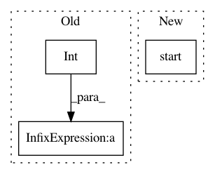

54d6d780eeae11ea7c3332889b3f64ed69729677,anvio/profiler.py,BAMProfiler,profile_multi_thread,#BAMProfiler#,771
Before Change
received_contigs += 1
if (int(time.time()) - last_memory_update) > 5:
memory_usage = utils.get_total_memory_usage()
last_memory_update = int(time.time())
After Change
self.progress.update("initializing threads ...")
mem_tracker = terminal.TrackMemory(at_most_every=5)
mem_usage, mem_diff = mem_tracker.start()
self.progress.update("contigs are being processed ...")
while received_contigs < self.num_contigs:
try:
In pattern: SUPERPATTERN
Frequency: 3
Non-data size: 3
Instances
Project Name: merenlab/anvio
Commit Name: 54d6d780eeae11ea7c3332889b3f64ed69729677
Time: 2020-03-05
Author: kiefl.evan@gmail.com
File Name: anvio/profiler.py
Class Name: BAMProfiler
Method Name: profile_multi_thread
Project Name: merenlab/anvio
Commit Name: 54d6d780eeae11ea7c3332889b3f64ed69729677
Time: 2020-03-05
Author: kiefl.evan@gmail.com
File Name: anvio/profiler.py
Class Name: BAMProfiler
Method Name: profile_single_thread
Project Name: biolab/orange3
Commit Name: 8034e5727fae554f3aec8fdcd0a3df62f3cb81bb
Time: 2016-09-27
Author: ales.erjavec@fri.uni-lj.si
File Name: Orange/canvas/scheme/widgetsscheme.py
Class Name: WidgetManager
Method Name: add_widget_for_node